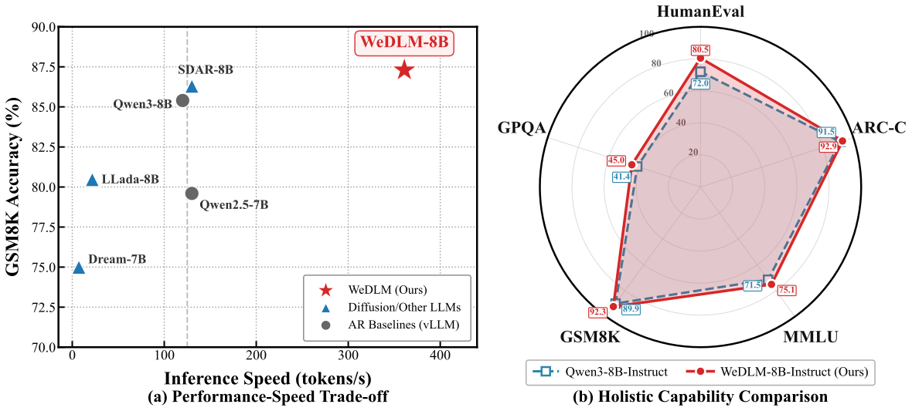
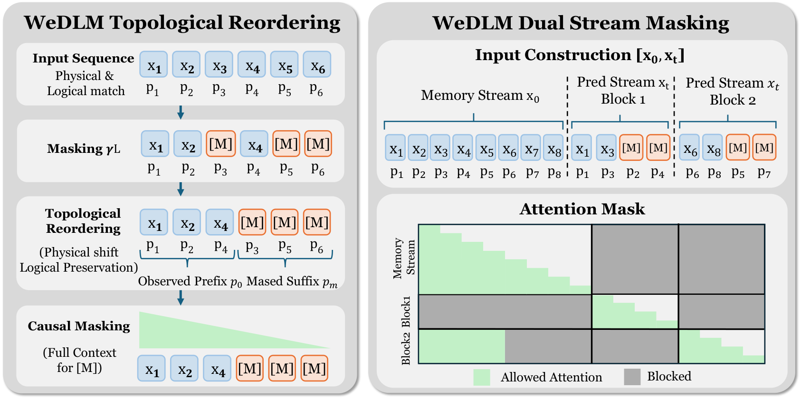
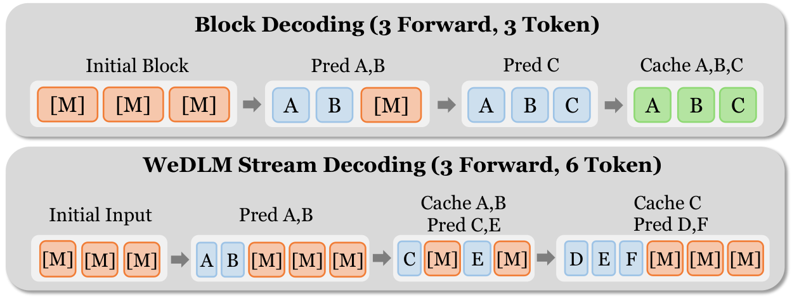
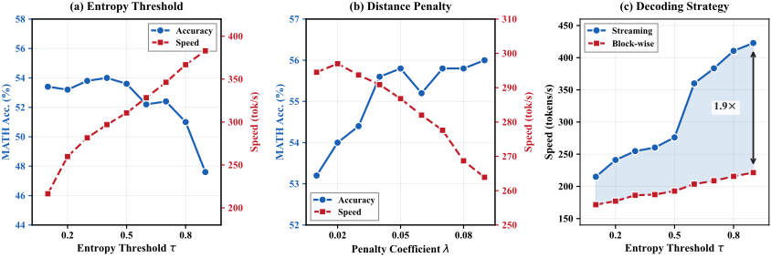
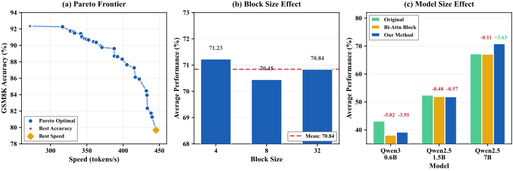
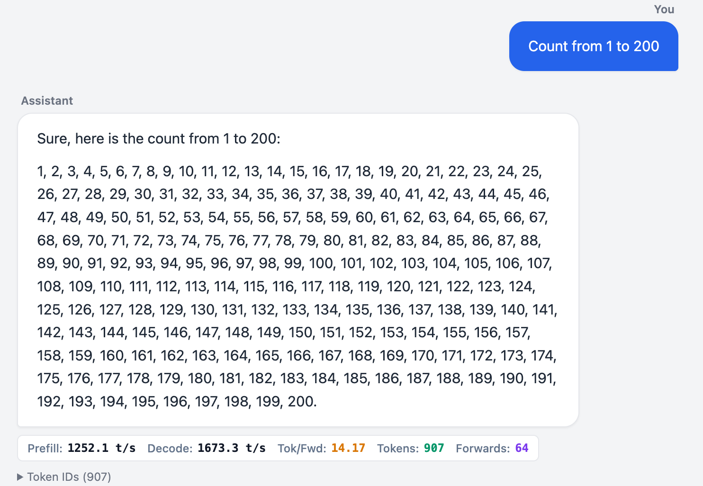
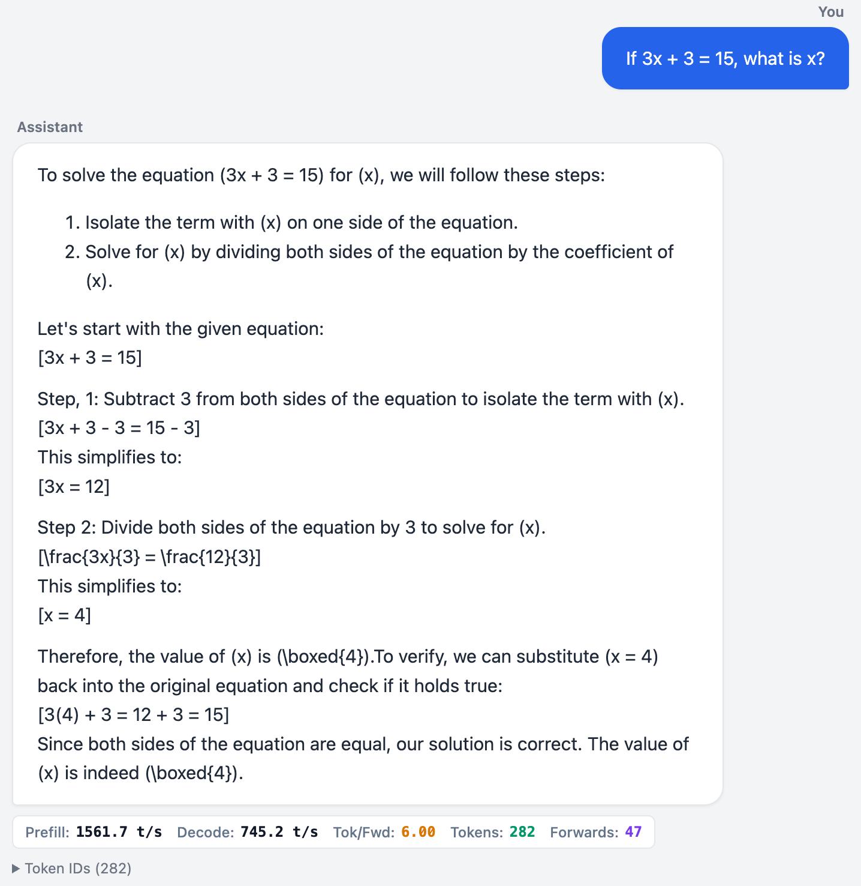
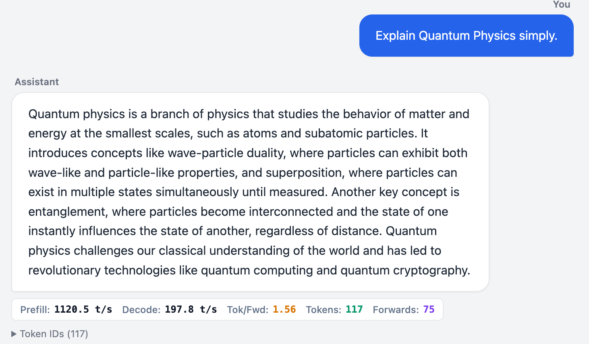

WeDLM：让扩散语言模型用回标准因果注意力，换来真正的推理加速
WeDLM: Reconciling Diffusion Language Models with Standard Causal Attention for Fast Inference
GitHub star 为 2026-10-20 的快照。阅读状态、进度与收藏只保存在你的浏览器里。
逐节精读
这部分按论文的章节顺序，用本站自己的话把整篇论文从头讲一遍。读懂某个概念需要的背景知识，会在第一次用到它之前单独讲清楚（青色框）。每个结论都尽量说出“因为什么、所以什么”。本页读的是 arXiv 第 1 版（2025-12-28，23 页；截至 2026-10-20，arXiv 上只有这一版）。论文后来被 ICML 2026 接收为口头报告，会议版本我们没能核对（OpenReview 页面需要人机验证），所以这里的数字都以 arXiv 第 1 版为准。论文以 CC BY 4.0 许可发布，所以原文的图 1–8 直接放在讲到它的地方；原图没画到的东西（注意力里谁能看见谁、解码窗口一步步怎么走、各种加速数字的测量条件）用本站自己画的示意图和表格补上。标“推算”的数字是本站根据论文数据算出来的；标“读自原图数据”的数字是本站从原文 SVG 图的矢量坐标里读出来的近似值，不是论文正文里的原话。每节末尾有英文原文的链接。
0 导读：这篇论文解决什么问题
今天的大语言模型几乎都是自回归（AR）模型：从左到右一次生成一个 token，每生成一个就要把整个网络算一遍。在只服务一两个请求的时候，这样做非常浪费：每一步都要把几十 GB 的参数从显存读一遍，计算单元大部分时间在等数据，却只换来一个 token。扩散语言模型（DLLM）换了一种生成方式：先在要写的位置放上一串 [M]（掩码），每一步并行地猜所有被遮住的位置，把有把握的几个定下来，再接着猜剩下的。一次前向能定好几个 token，这就是它“并行解码”的卖点。
可是在真实部署里，扩散语言模型很少能比 vLLM 这类高度优化的 AR 推理引擎更快。这篇论文认为关键原因在注意力的方向上：LLaDA、Dream 等模型用双向注意力，每个位置都能看到右边尚未确定的位置，于是已经写好的 token 的中间结果（key 和 value）也会跟着右边的变化而变，没法像 AR 那样算一次就存进 KV 缓存。块扩散虽然能缓存已经写完的块，但块内部仍是双向的，块里的 token 要等整块写完才能进缓存。
WeDLM 的想法是：从头到尾只用标准的因果注意力（每个位置只看它左边），但通过调整 token 在输入里的摆放顺序，让每个被遮住的位置仍然能看到所有已知的 token。具体做法叫“拓扑重排”：把已知 token 挪到输入的最前面，被遮住的位置排到后面，同时让每个 token 带着它原来在句子里的位置编号，旋转位置编码（RoPE）就仍然按原来的位置计算注意力。推理时，作者配了一个“流式并行解码”：维护一个固定大小的窗口，每一步把窗口最左边已经连成一段的 token 立刻提交进 KV 缓存，再在窗口末尾补上同样多的新 [M]，让每一步的并行工作量保持不变。因为注意力始终是标准的因果掩码，每一步在计算上就是一次“在已有缓存上做的小规模预填充”，FlashAttention、PagedAttention、CUDA Graphs 这些 AR 引擎里的现成优化都能直接用。
作者从 Qwen2.5-7B 和 Qwen3-8B 出发，用 100B token 继续预训练、再做指令微调，得到 WeDLM-7B / 8B。在作者自己的评测协议下，WeDLM-8B-Instruct 的 10 项平均分是 77.53，比 Qwen3-8B-Instruct 的 75.12 高；不过这张质量表是用“每步只定 1 个 token”的方式测的，并没有用加速模式。速度方面，在 GSM8K 上相对 vLLM 上的 Qwen3-8B，保守设置下约 1.97 倍（准确率 92.3%），激进设置下 3.2 倍（准确率 79% 以上）；在“从 1 数到 200”这种几乎没有不确定性的文本上能到 1673 token/s，在开放式解释题上只有 197.8 token/s。论文没有写测速用的 GPU 型号、batch 大小和并发数，这一点在第 6 节的“结果的份量”里会仔细讨论。
读完这部分，你应该能回答这几个问题：
- 为什么扩散语言模型“每步能猜好几个”，却常常跑不过 vLLM 上一个一个生成的 AR 模型？
- KV 缓存成立需要什么条件？双向注意力和块扩散分别在哪里破坏了它？
- “前缀可缓存率” \(p_{\text{cache}}\) 量的是什么，和“每次前向定几个 token”有什么不同？
- 拓扑重排怎样只靠改变 token 的摆放顺序和位置编号，就让被遮住的位置看到全部已知 token？它放弃了什么？
- 双流掩码训练在弥补训练和推理之间的哪一种差距？
- 流式并行解码每一步做哪几件事？为什么它提交进缓存的 KV 一定是精确的？
- “接近 3 倍”“最高 10 倍”是在什么条件下量出来的？什么情况下会缩水？
1 引言：扩散模型能并行，为什么还跑不过 vLLM
AR 模型生成第 \(t\) 个 token 时，每一层的注意力都要用到前面所有 token 的 key 和 value。因为用的是因果注意力，第 \(i\) 个 token 在每一层的表示只依赖它自己和它左边的 token；右边后来写出什么，都不会回过头改变它的 key 和 value。所以这些 key、value 算过一次就可以存下来，以后每一步只为新 token 计算并追加，这就是 KV 缓存（细节见 vLLM 精读 §2.2）。
它成立的条件可以说得很精确：一个位置的 key/value 只依赖它左边已经确定下来的内容。从序列开头起连续满足这个条件的一段，就叫“可以缓存的前缀”。只要前缀不变，缓存就永远有效；新内容只能接在末尾。
vLLM 这类引擎围绕这个性质做了大量工程：PagedAttention 把 KV 缓存切成小块按需分配（见 vLLM 精读 §4）；前缀缓存让共享同一段系统提示的请求复用同一份 KV；CUDA Graphs 把每一步要启动的几十上百个 GPU 内核预先录成一张图，一次提交，省掉逐个启动的开销；FlashAttention 等内核把注意力算得又快又省显存。这些优化全都默认两件事：注意力是因果的，新 token 只追加在末尾。
LLaDA、Dream 这类掩码扩散模型用的是双向注意力：每个位置都能看到序列里的所有其他位置，包括右边那些还是 [M] 的位置。于是，一个早就定下来的 token，它从第 2 层开始的 key/value 也会随着右边某个 [M] 被填成具体的词而改变。严格地说，每一步都得把整段序列重新算一遍。Fast-dLLM、dKV-Cache 的做法是承认相邻几步之间 KV 变化不大，直接复用旧值，这是“近似缓存”，会带来一些误差（见 Fast-dLLM 精读 §3.1、dKV-Cache 精读 §4）。
块扩散（BD3-LM、SDAR、Fast-dLLM v2）是一个折中：把序列切成长度为 \(B\) 的块，块与块之间用因果注意力，块内部用双向注意力。前面的块写完以后不再变，它们的 KV 是精确的，可以缓存；但当前这一块内部仍然双向，块里任何一个 token 都要等整块写完才能进缓存（见 BD3-LM 精读、SDAR 精读）。
作者在块扩散身上看到两个限制。第一，块内双向注意力推迟了“可以缓存”的时刻：一个 token 早早就猜对了，也得等同一块里所有位置都定下来，因为它的 KV 可能还依赖块里右边那些没定的位置。第二，扩散式的解码可能是乱序的：右边的位置先定、左边的后定，新定下来的 token 就连不成一段从左到右的前缀，能进缓存的部分自然变少。
由此作者提出一个不同的设计方向：并行地恢复被遮住的 token，本身并不需要双向注意力；把严格的因果结构找回来，是让扩散式解码用上缓存的最直接的路。下面这张示意图把四种解码方式在“某一步里哪些位置的 KV 能直接复用”这件事上放在一起比较。
方法分训练和推理两部分。训练时用拓扑重排：把已知 token 搬到输入的物理前面，同时保留它们的逻辑位置编号，这样不改注意力掩码，被遮住的位置也能看到所有已知 token；再用双流掩码构造一条干净的“记忆流”和一条被遮住的“预测流”，让每个预测块学会以干净的历史为条件，缩小训练和推理之间的差距。推理时用流式并行解码：用一条按位置加权的置信度规则优先填左边的位置；因果注意力保证新提交的前缀立刻可以缓存；窗口随提交随补，不必像块扩散那样在块边界停下来等待。
论文列出三条贡献：一是因果扩散框架本身，二是流式并行解码，三是“第一个在墙钟速度上超过工业级 AR 引擎的扩散语言模型”。第三条的分量取决于速度是在什么条件下量的，第 6 节会把条件一条条摆出来。

- 引言里的几个数字和正文不完全一致：引言说 WeDLM-8B 平均 77.36，表 2 是 77.53；引言说指令微调用了“10B token”，§6.1 说用的是“10K 条内部指令数据”；加速倍数在摘要里是“接近 3 倍”，在引言里是“最高 3 倍”，在贡献列表里是“超过 3 倍”；低熵场景在摘要和引言里是“最高 10 倍 / 超过 10 倍”，在 §6.6 里是“超过 8 倍”。本页一律以正文表格和图为准，并在用到时说明出处。
- 这里的“快”指的是单个请求每秒生成多少 token（墙钟速度），不是整台服务器在大批量下每秒处理多少 token。这两者在扩散模型身上可能给出相反的结论，第 6.7 节会解释为什么。
2 预备知识：位置编号可以和摆放顺序分开
2.1 自回归语言模型
给定一串 token \(\mathbf{x}=[x_1,\dots,x_T]\)，AR 模型把整句话的概率拆成一连串条件概率的乘积：
第 \(t\) 个 token 只以它左边的 \(x_{<t}\) 为条件，所以生成时必须先有左边才能有右边，天然是一个接一个的。
2.2 逻辑位置与物理位置可以解耦
注意力本身不知道 token 的先后顺序，位置信息要靠位置编码告诉模型。RoPE（见 RoFormer 精读）的做法是：把位置编号为 \(p\) 的 token 的 query 和 key 向量，按与 \(p\) 成正比的角度旋转。两个旋转过的向量做点积时，旋转角度会相减，结果只取决于两者的位置编号之差 \(p_i-p_j\)。
这带来一个很有用的推论：注意力分数只看“你交给模型的位置编号”，不看这个 token 在输入张量里排在第几行。把一句话的 token 在输入里打乱顺序，只要每个 token 带着它原来的编号，任意两个 token 之间的注意力分数完全不变。真正决定“谁能看到谁”的，只剩下注意力掩码。
论文把这一点写成形式化的说法：AR 模型默认第 \(t\) 个 token 的逻辑位置 \(p_t\) 就等于它的物理下标 \(t\)；把输入看成“token–位置”对 \((x_t,p_t)\) 之后，模型给出的条件分布同时取决于 token 和交给它的位置编号：
这里 \(x_{<t}\) 指物理上排在第 \(t\) 行之前的 token。于是 token 可以按别的物理顺序送进模型，同时仍按它们的逻辑位置被引用；计算结果另外取决于注意力掩码规定的信息流向。WeDLM 正是利用了这一点。下图先用论文图 2 里的 6 个 token 的例子，把“物理下标”和“位置编号”分开画出来。
2.3 掩码扩散语言模型
掩码扩散语言模型（MDLM）把生成看成去噪。训练时取一段干净序列 \(\mathbf{x}_0\)（长度 \(L\)），随机抽一个掩码率 \(\gamma\in(0,1]\)，随机选出 \(\gamma L\) 个位置组成集合 \(\mathcal{M}\)，把它们换成 [M]，得到被破坏的序列 \(\mathbf{x}_\gamma\)；模型要把被遮住的位置猜回来。常用的目标是加权交叉熵：
求和只算被遮住的位置。系数 \(1/\gamma\) 的作用是：掩码率高时被遮住的位置多、损失项多，掩码率低时损失项少，乘上 \(1/\gamma\) 把不同噪声水平的贡献拉到同一量级。（从概率模型的角度，这个加权正好让损失成为负对数似然的一个上界，推导见 MDLM 精读；WeDLM 只沿用了这个加权，并没有报告似然或困惑度。）
标准 MDLM 用双向注意力，让被遮住的位置能汇集所有已知 token 的信息。作者指出这带来两个问题。第一，双向注意力与 KV 缓存不兼容（上一节已经讲过）。第二，当模型从一个预训练好的 AR 检查点改造而来时，双向结构和 AR 模型学到的因果表示之间有“归纳偏置的错配”：AR 模型的每一层都习惯了只看左边，突然让它看右边，它得重新适应。Dream 和 DiffuLLaMA 为此用了注意力掩码退火、输出错位（shift）等技巧（见 Dream 精读）。WeDLM 的做法是在严格因果注意力下优化 MDLM 式的去噪目标，靠的就是下一节和第 4 节的重排。
3 动机与分析：速度看什么，掩码恢复需要什么
3.1 前缀可缓存率 \(p_{\text{cache}}\)
以往的扩散语言模型主要靠提高“每次前向预测几个 token”来提速。作者认为在推理时更要紧的是：预测出来的 token 里，有多少能转化成一段不断增长、KV 有效的前缀。理由是：有 KV 缓存时，一个 token 的 KV 只有在它只依赖左边内容时才能复用，所以只有从左到右的前缀能缓存；预测出来却没能进入已提交前缀的 token，在之后的前向里还得重算，总计算量就上去了。
为了量化这一点，作者定义了两个计数。\(N_{\text{gen}}\) 是最终生成的新 token 数（不算提示）；\(N_{\text{fwd}}\) 是预填充之后，所有解码前向里网络处理过的 token 实例总数，包括因为重算而重复处理的那些。两者之比就是前缀可缓存率：
它可以读成：预填充之后网络每处理一个 token 实例，平均有 \(p_{\text{cache}}\) 的概率变成一个最终的、可以复用的 token；倒过来，\(1/p_{\text{cache}}\) 就是平均的重算倍数。AR 解码每次前向只处理一个新 token，这个 token 就是最终输出，所以 \(p_{\text{cache}}=1\)。
把定义往下推一步（本站推导）：如果每次前向处理 \(n\) 个 token 实例、平均最终定稿 \(k\) 个，那么 \(p_{\text{cache}}\approx k/n\)。也就是说，\(p_{\text{cache}}\) 是“每次前向定稿的 token 数”除以“每次前向处理的位置数”。下表用一组假设的数字把四种方式放在一起。
| 解码方式 | 每次前向处理的位置数 \(n\) | 每次前向定稿 \(k\)（假设） | \(p_{\text{cache}}\approx k/n\) | 平均重算倍数 |
|---|---|---|---|---|
| AR | 1 | 1 | 1 | 1 |
| 全序列双向，不用缓存（每步定 1 个） | 256（生成区全部重算，提示也要重算，这里没计入） | 1 | ≈ 0.004 | 256 |
| 全序列双向，不用缓存（每步定 4 个） | 256 | 4 | ≈ 0.016 | 64 |
| 块扩散，块长 32（每步定 4 个） | 32（当前块整块重算） | 4 | 0.125 | 8 |
| WeDLM，窗口 16（每步提交 4 个） | 16（窗口里的所有槽位） | 4 | 0.25 | 4 |
作者据此说：全双向的方法（LLaDA、Dream）每次前向也许能预测很多 token，但能立刻进缓存的很少，所以 \(p_{\text{cache}}\) 低；块扩散（SDAR、NBDiff）的提速，很大程度上来自部分前缀提交带来的 \(p_{\text{cache}}\) 提升。因此在有缓存的解码里，提高 \(p_{\text{cache}}\) 带来的提速可以赶上甚至超过提高每步并行度，应当作为推理导向的解码的首要目标。
接着作者把大多数 MDLM 式解码器里 \(p_{\text{cache}}\) 崩塌的原因归结为两个结构性问题：双向的 KV 耦合（token 的表示依赖右边未定的 token，连早早定下的 token 也不能缓存）和乱序定稿（右边先于左边定下，破坏了缓存所需的从左到右结构）。前者靠第 4 节的全程因果注意力解决，后者靠第 5 节推理时偏向从左到右提交的机制解决。
- \(p_{\text{cache}}\) 在论文里只被定义和定性引用，实验部分从没报告过任何方法的实测值。第 6.4 节说“流式解码的 \(p_{\text{cache}}\) 更高”，依据是速度更快，而不是测出来的 \(p_{\text{cache}}\)。
- \(p_{\text{cache}}\) 衡量的是“算力浪费了多少”，它能不能变成时间上的浪费，要看硬件处在什么状态。只服务一两个请求时，解码是访存受限的：一次前向的时间主要花在读参数上，多处理十几个位置几乎不花额外时间（第 6.6 节的案例能看到这一点），这时速度主要取决于前向次数，也就是每次前向定稿几个。只有当 batch 大到算力成为瓶颈时，被浪费的计算才实打实地变成时间，\(p_{\text{cache}}\) 才直接决定吞吐。所以“速度主要由 \(p_{\text{cache}}\) 决定”这个判断，在大 batch 的服务场景里最有力，在 batch 1 的场景里要打折扣。
3.2 掩码恢复真的需要双向注意力吗
掩码扩散模型根据已知（未被遮住）的上下文恢复被遮住的 token。标准 MDLM 用双向注意力，让每个位置都能汇集所有其他位置的信息。作者指出这很自然，但并不是掩码恢复这个目标本身的要求。他们把掩码恢复真正需要的信息流归纳成两条原则。记 \(\mathcal{O}\) 为已知位置的集合，\(\mathcal{M}\) 为被遮住位置的集合：
- 原则 (i) 已知上下文可见：每个被遮住的位置都应该能看到全部已知 token \(x_{\mathcal{O}}\)，从而利用全局的已知信息做预测。这是 MDLM 式去噪的核心要求。
- 原则 (ii) 掩码之间单向依赖：被遮住的位置之间的相互作用不必是对称的。给 \(\mathcal{M}\) 规定一个顺序 \(\pi\)，每个被遮住的位置只看顺序在它之前的那些被遮住的位置。这样，“同一步里互相可见”就换成了因果注意力能实现的单向依赖。这是一个建模上的选择。
按原则 (ii)，被遮住的那一组 token 的联合分布被写成一个有向的分解：
意思是：顺序靠前、先被解出来的 token，可以影响顺序靠后的 token，而不需要双向注意力。作者明确说，他们不声称这和双向注意力的 MDLM 等价，只是说这两条原则足以用标准因果注意力实现“以已知集合为条件的掩码预测”；原则 (ii) 的单向依赖在实践中够不够用，是一个要靠实验回答的问题（第 6.5 节的消融）。
由此得出 WeDLM 的设计要求：保持标准因果注意力，同时保证每个被遮住的位置都能看到完整的已知上下文。下一节讲怎样用拓扑重排做到。
[M] 占位符：后面的 [M] 能看到它们的隐藏状态，却看不到它们将被填成什么词。所以在同一步之内，各个被遮住位置的预测仍然是彼此独立地给出的，和双向 MDLM 并行解码时的情况一样（并行解码的风险见 Fast-dLLM 精读 §2.3）。分解式里“前面的词影响后面的词”，要跨步才真正发生：前一步填好的词，在下一步被挪进已知前缀，成为后面位置的条件。4 训练：在因果注意力下做掩码恢复
一层注意力里，第 \(i\) 行（发出查询的位置）能否看到第 \(j\) 列（被看的位置），由一张 \(n\times n\) 的表决定。因果掩码是下三角：第 \(i\) 行只能看第 1 到第 \(i\) 列。双向掩码全开。块因果掩码是按块的下三角、块内全开。FlashAttention 这类高效内核对“标准下三角”和“全开”支持最好，推理引擎里的 KV 缓存、分页、CUDA Graphs 也都是按标准下三角设计的；其他形状的掩码要么需要专门的内核，要么得退回较慢的实现。
4.1 拓扑重排：换位置，不换编号
设定。取一段干净序列 \(\mathbf{x}_0=[x_1,\dots,x_L]\)，逻辑位置是 \(\mathbf{p}=[1,\dots,L]\)。抽一个掩码率 \(\gamma\in(0,1]\)，均匀地选出 \(\gamma L\) 个位置组成被遮住的集合 \(\mathcal{M}\)，其余位置组成已知集合 \(\mathcal{O}\)，记 \(N_o=|\mathcal{O}|\)、\(N_m=|\mathcal{M}|\)。
重排。标准 MDLM 靠双向注意力让被遮住的位置不论在哪都能看到已知 token。WeDLM 改用一次重新排列来提供同样的可见性：把所有已知 token 排在所有 [M] 前面，
其中 \(o_1<o_2<\dots\) 是按升序排好的已知位置。逻辑位置用一条同样重排过的位置序列保留下来：
\(m_1<m_2<\dots\) 是按升序排好的被遮住位置。为什么这样就够了：在因果注意力下，物理下标为 \(k\) 的位置只能看下标不超过 \(k\) 的位置。重排后已知 token 占据物理下标 \(1,\dots,N_o\)，掩码占据 \(N_o+1,\dots,L\)，所以每个掩码都能看到所有已知 token。而 RoPE 按 \(\tilde{\mathbf{p}}\) 里的逻辑位置计算，注意力分数取决于逻辑上的相对距离，而不是物理下标。
走一遍论文的例子。6 个 token \(x_1,\dots,x_6\)，遮住第 3、5、6 个，得到 \(x_1\ x_2\ \texttt{[M]}\ x_4\ \texttt{[M]}\ \texttt{[M]}\)。重排后物理顺序是 \(x_1\ x_2\ x_4\ \texttt{[M]}\ \texttt{[M]}\ \texttt{[M]}\)，对应的位置编号是 \(1,2,4,3,5,6\)。套上普通的下三角掩码：位置 3 的 [M] 排在物理第 4 行，看得到 \(x_1,x_2,x_4\)；位置 6 的 [M] 排在最后，看得到全部已知 token 以及位置 3、5 的两个 [M]。

[M] 都能看到全部已知 token。右半部分是 4.2 节的双流掩码：上面是输入怎么拼（8 个 token 的记忆流 \(x_0\)，后面接两个长度为 4 的预测块，块内已经重排过），下面是对应的注意力掩码，绿色是允许看、灰色是禁止看。图中 “Mased Suffix” 是原图的拼写错误（应为 Masked）。训练目标。有了 \((\tilde{\mathbf{x}},\tilde{\mathbf{p}})\)，模型要在每个掩码位置猜出原来的 token。第 \(j\) 个掩码排在物理下标 \(N_o+j\)，逻辑位置是 \(m_j\)，它只以物理上排在它前面的内容为条件：
\(1/\gamma\) 沿用了式 (3) 的加权习惯。和双向 MDLM 的关键区别是：这里全程是严格的因果注意力，每个掩码只以物理上更早的位置为条件，却通过重排仍然拿到了完整的已知上下文。
- 已知 token 之间也只能单向看。在右图里，\(x_1\) 看不到 \(x_2\)、\(x_4\)，\(x_4\) 也看不到它右边的任何东西；而在双向 MDLM 里，\(x_1\) 能看到整句话。也就是说，已知 token 自己的表示只用到了它左边的已知 token，和 AR 预训练时一模一样。这对从 AR 检查点出发是好事（不用改变模型已经学会的表示方式），代价是只有排在最后的掩码位置汇集了全部已知信息。
- 已知 token 看不到任何
[M]。这正是推理时它们的 KV 能被缓存的原因：它们的表示不受右边未定内容的影响。 - 式中的条件 \(\tilde{\mathbf{x}}_{<N_o+j}\) 包含排在前面的那些
[M]占位符本身，而不是它们的正确答案。所以 3.2 节那个乘积分解在训练里也是“看得到前面的掩码位置，但看不到它们的词”。
4.2 双流掩码：让训练看到和推理一样的上下文
训练与推理的差距从哪里来。式 (7) 在整段序列上均匀地遮。可推理时，解码大体从左往右推进：左边是已经提交的干净前缀，还没解出来的位置集中在右边一段（块状的）后缀里。训练时模型面对的是“遮得到处都是、上下文里也有洞”的序列，推理时面对的是“一长段干净前缀加一小段被遮的后缀”，两种输入的分布不一样。SDAR、NBDiff 等把 AR 和扩散目标结合的工作也有类似的动机。最直接的修补是训练时只遮一小段后缀，但这样每条序列里只有很少几个 token 参与损失，训练效率太低。
构造两条流。把干净序列复制成两份：一份是记忆流 \(\mathbf{x}_o\)，一份是预测流 \(\mathbf{x}_t\)，起初都和 \(\mathbf{x}_0\) 一样，然后首尾相接作为物理输入。关键是两条流共用同一套位置编号：
这样，在 RoPE 看来，预测流里位置 5 的 token 和记忆流里位置 5 的 token 处在同一个位置参照系中，两者能对齐；两条流的区别只体现在物理段落和注意力掩码上。
按块遮、块内重排。把预测流切成 \(K=\lceil L/B\rceil\) 个长度为 \(B\) 的块（最后一块可能短一些）。每个块 \(k\) 独立抽一个掩码率 \(\gamma_k\in(0,1]\)，遮住一部分，然后在块内做 4.1 节的拓扑重排：块里已知的 token 挪到前面，掩码挪到后面，位置编号保留。记忆流始终不遮、不重排。
注意力怎么开。预测流里第 \(k\) 块的一个 token 能看到两部分：记忆流里逻辑位置在第 \(k\) 块之前的所有 token（干净的历史）；第 \(k\) 块内部、重排后物理上排在它前面的 token（普通因果）。它看不到预测流里前面那些块，前面的历史一律从干净的记忆流里取。这模拟的正是推理时“前面的块已经定稿，作为上下文使用”的情形。
| 发出查询的 token | 在记忆流里能看到 | 在预测流里能看到 | 看不到 |
|---|---|---|---|
| 记忆流的 x₅ | x₁–x₅（普通因果） | 无 | 整个预测流 |
| 预测块 1 的 M₄ | 无（块 1 之前没有历史） | x₁、x₃、M₂、M₄ 自己 | 块 2；记忆流 |
| 预测块 2 的 x₈ | x₁–x₄（块 2 之前的干净历史） | x₆、x₈ 自己 | M₅、M₇；预测块 1；记忆流的 x₅–x₈ |
| 预测块 2 的 M₇ | x₁–x₄ | x₆、x₈、M₅、M₇ 自己 | 预测块 1；记忆流的 x₅–x₈ |
build_2d_attention_mask 整理；本站示意图。训练目标。记 \(\mathcal{M}_k\) 为第 \(k\) 块里被遮住的逻辑位置集合，\(\tilde{\mathbf{x}}_t^{(k)}\) 为重排后的第 \(k\) 块。各块的损失加起来：
\(\mathbf{x}_o^{(<k)}\) 是逻辑位置在第 \(k\) 块之前的记忆流 token，\(\tilde{\mathbf{x}}_t^{(k,<j)}\) 是重排后第 \(k\) 块里物理上排在位置 \(j\) 前面的 token，\(1/\gamma_k\) 是按块的加权。
推理时怎么办。推理时直接扔掉记忆流，在单条序列上用标准因果掩码解码。模型结构不需要任何改动，FlashAttention 这类优化过的注意力实现都能用。
把干净序列和加噪序列拼成一条、用一张特制掩码一次算完，这个技巧最早是 BD3-LM 为块扩散训练提出的“向量化训练”（见 BD3-LM 精读 §4.2），SDAR、Fast-dLLM v2 也用了类似的拼接。WeDLM 的不同在于块内部：别人块内双向，WeDLM 块内是“先重排、再因果”。
finetune/），继续预训练的代码和数据没有公开，下面几点来自微调代码，未必与论文的 100B 继续预训练完全一致。① 每块的掩码率 \(\gamma_k\) 从 \((0,1)\) 均匀抽取；损失权重 \(1/\gamma\) 在被遮住的 token 上按总和归一化，所以实际算的是加权平均，而不是式 (10) 那样的加权求和。② 论文说 AR 辅助损失“在同一批序列上用普通的下一个词预测计算”；代码里它取的是记忆流那一段的输出，因为记忆流本身就是一条普通的因果序列，这个损失在同一次前向里顺带算出。③ 总损失是 \((\mathcal{L}_{\text{mask}}+w\,\mathcal{L}_{\text{AR}})/(1+w)\)，示例微调配置里 \(w=1.0\)、块长 32、学习率 \(3\times10^{-6}\)；论文没有给出继续预训练时 \(w\) 取多少。④ 注意力后端可选 PyTorch 自带的 SDPA（直接用一张完整的掩码矩阵）或 MagiAttention（按区间描述不规则掩码）。官方仓库 finetune/src/masking.py、loss.py、trainer.py、configs/example.yaml5 推理：流式并行解码
5.1 三个要求
对提示做完预填充之后，解码器反复做两件事：并行预测多个被遮住的位置；把足够有把握的预测转成已提交的前缀，供后面的步骤复用它们的 KV。为了让 \(p_{\text{cache}}\) 高，作者要求：
- KV 立即有效（没有双向耦合）。一个 token 一旦预测出来，它的 KV 应该只依赖已经提交的上下文；否则它不能马上缓存，以后还要重算。
- 从左到右提交（避免乱序）。标准 KV 缓存只支持连续的前缀，所以应优先解出逻辑上靠左的位置，让每一步尽可能延长已提交的前缀。
- 不停下等待（避免流水线气泡）。不在块边界停顿；token 一提交就引入新的掩码位置，让每次前向的工作量保持稳定。
第 1 条由因果注意力加上推理时的重排保证：已经解出的 token 排在未解的 [M] 前面（位置编号照旧），在严格因果掩码下它的 KV 只依赖物理上更早的 token，解出来以后马上就是有效的。第 2、3 条由流式并行解码保证：一条偏向左边的置信度规则，加上一个随时补充的动态滑动窗口。

[M]；第二次前向时 A、B 已在最左边连成一段，直接进缓存，同时猜出 C 和 E；第三次 C 进缓存，同时猜出 D、F。3 次前向里提交了 A、B、C，另外 D、E、F 已经猜好、等待提交，标题“6 Token”数的是猜出来的总数。这张图只是示意：图中窗口的长度在 3、5、4、6 之间变化，而算法里的窗口长度是固定的 \(W\)。5.2 算法：窗口里的五个动作
维护一个有 \(W\) 个槽位的窗口，每个槽位带着一个固定的全局位置编号，槽位里要么是“已经填好、但还没提交”的 token，要么是等待预测的 [M]。每一步做五件事：
- 重排：把窗口里已填好的 token 排到
[M]前面，位置编号跟着走； - 前向：以持久的 KV 缓存为前文，对窗口做一次因果前向；
- 提交：把窗口最左边、逻辑上连续的那段已填 token 提交，它们这一步算出的 KV 已经有效，追加进缓存；
- 预测：在剩下的
[M]里，按置信度和位置挑出一部分填上； - 补充：在窗口末尾补上与提交数相同的新
[M]，让并行度保持不变。
距离惩罚。为了让解出来的 token 尽量连成长前缀，挑选时偏向靠左的位置。沿用 Dream 的做法，用预测分布的熵 \(H_i=-\sum_v p_i(v)\log p_i(v)\) 衡量第 \(i\) 个掩码槽的不确定性（熵越低越有把握），再加上一个距离项：
\(d_i\) 是槽位 \(i\) 到窗口里最左边那个剩余 [M] 的距离，\(\lambda>0\) 控制偏向左边的力度。调整后的熵低于阈值 \(\tau\) 的槽位全部填上。举个数（推算，示例值）：\(\lambda=0.1\)、\(\tau=0.4\)，最左边的掩码熵是 0.35，往右第 3 个掩码熵只有 0.15。调整后前者仍是 0.35，后者变成 \(0.15+0.3=0.45\)。结果是左边那个被填上，右边那个虽然更有把握，这一步也先不填。这样做减少了乱序，让前缀更快地连起来。
原文算法 1 用本站的话改写如下：
cache = prefill(prompt) # 提示的 KV
window = [MASK] * W # 每个槽位带固定的全局位置编号
while window:
order = filled(window) + masks(window) # (a) 已填的排前面，位置编号不变
logits, kv = forward(order, cache) # (b) 以缓存为前文的一次因果前向
j = first_mask_index(window) # (c) 窗口里第一个 [M] 之前的部分
output += window[:j] # 逻辑上连续的已填 token：提交
cache.extend(kv_of(window[:j])) # 它们这一步算出的 KV 已经有效
window = window[j:]
for i in select_by_entropy(logits, tau, lam): # (d) 调整后熵 < tau 的槽位
window[i] = sample(logits[i])
window += [MASK] * j # (e) 补充 j 个新 [M]，窗口长度回到 W
下面用一个 \(W=4\) 的小例子把这五个动作走一遍。要生成的句子是“猫坐在垫子上。”，提示已经在缓存里。
| 步 | 送进前向的物理顺序 | 这一步提交进缓存 | 这一步新填入 | 补入 [M] | 步末窗口（按位置排） |
|---|---|---|---|---|---|
| 1 | M₁M₂M₃M₄ | 无（窗口里没有已填的） | 猫₁、坐₂ | 0 | 猫₁坐₂M₃M₄ |
| 2 | 猫₁坐₂M₃M₄ | 猫坐 | 垫₄（位置 3 熵太高，没填） | 2 | M₃垫₄M₅M₆ |
| 3 | 垫₄M₃M₅M₆ | 无（最左边的位置 3 还是 [M]） | 在₃、子₅ | 0 | 在₃垫₄子₅M₆ |
| 4 | 在₃垫₄子₅M₆ | 在垫子 | 上₆ | 3 | 上₆M₇M₈M₉ |
为什么提交的 KV 一定精确。重排之后，已填 token 占据窗口最左边的几个物理槽位，它们只能看到持久缓存和物理上更早的已填槽位。对于逻辑上从左边连续的那一段来说，“物理上更早的已填槽位”恰好就是它在逻辑上的前驱。所以这段 token 这一步算出的 KV，和一个因果模型处理“提示 + 已提交文本 + 这段文本”时会算出的完全一样，可以不等其他掩码槽就直接提交。这正面解决了第 3 节说的双向 KV 耦合。
乱序的代价。上例中“垫₄”早一步就填好了，却要等“在₃”填好才能提交，而且它第 3 步算出的 KV 作废、第 4 步重算。这就是乱序在 WeDLM 里的代价：不影响正确性，但浪费一次计算和一点时间。距离惩罚的作用就是让这种情况少发生。
用动态滑动窗口消除“停下等待”。块解码必须等整块定稿才能提交，块快写完时，每次前向只剩一两个掩码可猜，却还要把整块重算一遍，形成流水线里的“气泡”。流式解码保持窗口长度 \(W\) 不变：每一步提交多少 token，就在末尾补多少新的 [M]，每次前向的工作量大致恒定，也不需要在块边界同步。
与高效推理系统兼容。因为全程都是标准因果注意力，每一步解码在计算上就是“在已有缓存之上，对窗口里的 \(W\) 个 token 做一次因果前向”，相当于一次小规模的预填充。FlashAttention、PagedAttention、CUDA Graphs 都原生支持这种计算，不需要改内核，所以可以直接部署在工业级的 AR 推理设施上。补充一点（本站分析）：窗口长度固定，意味着每一步送进模型的张量形状固定，这恰好符合 CUDA Graphs 要求形状不变的条件。
wedlm 在致谢里写的是基于 nano-vllm（一个精简的 vLLM 复刻）构建，并不是直接跑在 vLLM 上。② 默认参数：窗口 \(W=16\)、阈值 \(\tau=0.4\)、距离系数 \(\lambda=0.02\)；评测脚本的默认值相同，每个进程每批 16 条。\(\tau\) 设为 None 时退化为“每步只填调整后熵最小的那一个”，这对应论文表 1、表 2 的质量评测方式。③ 如果没有任何槽位低于阈值，就填调整后熵最小的那一个，所以每一步至少填 1 个。④ \(d_i\) 按窗口里离第一个剩余 [M] 的槽位数计算；熵用原始 logits 计算，真正填进去的词按温度、top-p、top-k 采样。⑤ 填进去的词以后不会被重新遮住或改写。⑥ 每一步窗口里各位置的 KV 直接写进它们逻辑位置对应的分页缓存槽，“提交”只是把已提交长度往前推；官方实现在前向之前就把本步要提交的数量补成新的 [M]，所以前向实际处理 \(W\) 加上提交数个位置，与算法 1 的记账略有不同。官方仓库 wedlm/engine/wedlm_decoder.py、sampler.py、sampling_params.py、config.py；evaluation/evaluation_base.sh6 实验：质量保住了吗，到底快了多少
6.1 训练设置
| 项目 | 设置（原文 §6.1） |
|---|---|
| 底座 | Qwen2.5-7B → WeDLM-7B；Qwen3-8B → WeDLM-8B |
| 继续预训练 | 100B token；学习率从 \(3\times10^{-6}\) 按余弦衰减到 \(3\times10^{-7}\)；双流掩码的块长 \(B=32\)；用 MagiAttention 处理不规则掩码（不需要自定义 CUDA 内核）；加 AR 辅助损失以保留原来的下一个词预测能力 |
| 指令微调 | 10K 条内部指令–回答数据（§1 的说法是 10B token）；学习率 \(3\times10^{-6}\)，余弦衰减 |
| 没有交代的 | 继续预训练数据的来源与构成、batch 大小、训练步数、AR 辅助损失的权重、所用 GPU 与训练时长 |
还有一处小的出入：Hugging Face 上 WeDLM-8B 的模型卡写的是从 Qwen/Qwen3-8B 初始化，而这个仓库名对应的是 Qwen3-8B 经过后训练的版本（只做过预训练的版本叫 Qwen/Qwen3-8B-Base）；论文表 1 却把它当作“基础模型”来比较。到底从哪个检查点出发，论文和模型卡都没有说清。
6.2 评测设置
任务。常识与知识：ARC-Challenge（0-shot）、ARC-Easy（表里有，正文的任务列表里没提）、GPQA-Diamond（5-shot）、HellaSwag（10-shot）、MMLU（5-shot）。数学：GSM8K（3-shot）、MATH（4-shot）。代码：MBPP（3-shot）、HumanEval 与 HumanEval-plus（4-shot）。生成类任务的最大生成长度都是 512 个 token，采样温度 0.1。
解码方式。为了公平，表 1、表 2 统一用“逐步解码”：每一步，所有方法（WeDLM 和扩散基线）都只在熵最低的位置生成 1 个 token；WeDLM 另外用窗口 \(W=6\)、距离系数 \(\lambda=0.10\)。也就是说，两张质量表测的都是不并行时的质量，没有用到任何加速。
对照。AR 基线是 WeDLM 的两个底座 Qwen2.5-7B 和 Qwen3-8B；扩散基线是 LLaDA-8B、Dream-7B，指令模型里另加 SDAR-8B。每个模型用它推荐的推理框架：LLaDA 和 Dream 用 dInfer，SDAR 用 JetEngine，Qwen 用 vLLM；论文说 WeDLM 也“通过 vLLM 提供服务”（官方代码实际基于 nano-vllm，见第 5 节的代码说明）。
6.3 生成质量：表 1 与表 2
| 基础模型（原文表 1） | Qwen2.5-7B | WeDLM-7B | Qwen3-8B | WeDLM-8B | LLaDA-8B | Dream-7B |
|---|---|---|---|---|---|---|
| ARC-C（0-shot） | 89.93 | 90.70 | 92.66 | 92.92 | 81.14 | 88.40 |
| ARC-E（0-shot） | 96.55 | 96.13 | 97.13 | 97.14 | 92.00 | 96.21 |
| HellaSwag（10-shot） | 80.20 | 85.11 | 85.27 | 84.55 | 85.34 | 78.05 |
| MMLU（5-shot） | 71.62 | 71.93 | 74.03 | 75.46 | 64.61 | 70.64 |
| GSM8K（3-shot） | 79.23 | 84.76 | 85.97 | 90.20 | 71.80 | 75.97 |
| MATH（4-shot） | 43.40 | 48.20 | 50.80 | 53.60 | 28.00 | 38.00 |
| GPQA-Diamond（5-shot） | 33.70 | 36.87 | 37.00 | 42.42 | 29.80 | 25.76 |
| MBPP（3-shot） | 65.30 | 61.81 | 70.94 | 67.00 | 41.99 | 56.47 |
| HumanEval（4-shot） | 59.14 | 68.90 | 68.90 | 75.00 | 31.71 | 20.12 |
| HumanEval-plus（4-shot） | 53.05 | 64.00 | 63.40 | 68.90 | 28.05 | 19.51 |
| 平均 | 67.21 | 70.84 | 72.61 | 74.72 | 55.44 | 56.91 |
| 指令模型（原文表 2） | Qwen2.5-7B | WeDLM-7B | Qwen3-8B | WeDLM-8B | LLaDA-8B | Dream-7B | SDAR-8B |
|---|---|---|---|---|---|---|---|
| ARC-C（0-shot） | 86.09 | 89.59 | 91.47 | 92.92 | 85.92 | 87.20 | 91.13 |
| ARC-E（0-shot） | 93.27 | 96.09 | 96.17 | 97.43 | 94.32 | 93.27 | 97.01 |
| HellaSwag（10-shot） | 87.59 | 84.75 | 86.13 | 82.94 | 78.55 | 62.00 | 92.12 |
| MMLU（5-shot） | 71.98 | 70.52 | 71.52 | 75.14 | 63.70 | 64.19 | 73.61 |
| GSM8K（3-shot） | 89.91 | 87.57 | 89.91 | 92.27 | 80.59 | 79.00 | 91.66 |
| MATH（4-shot） | 45.00 | 55.40 | 69.60 | 64.80 | 34.20 | 41.00 | 43.40 |
| GPQA-Diamond（5-shot） | 27.10 | 33.84 | 41.41 | 44.95 | 25.25 | 35.86 | 38.38 |
| MBPP（3-shot） | 63.66 | 63.66 | 68.37 | 70.53 | 36.24 | 58.52 | 67.97 |
| HumanEval（4-shot） | 76.22 | 75.00 | 71.95 | 80.49 | 36.59 | 57.32 | 76.83 |
| HumanEval-plus（4-shot） | 70.12 | 71.34 | 64.63 | 73.78 | 32.32 | 51.22 | 70.12 |
| 平均 | 71.09 | 72.78 | 75.12 | 77.53 | 56.77 | 62.96 | 74.22 |
两张表按原文数字转录，只是把 WeDLM 移到了各自的 AR 底座旁边，方便对照；加粗沿用原文（每行最高）。各列平均分本站按 10 项重新算过，与原文一致。
基础模型。WeDLM-7B 平均 70.84，比 Qwen2.5-7B 的 67.21 高 3.6 分；WeDLM-8B 平均 74.72，比 Qwen3-8B 的 72.61 高 2.1 分。提升集中在偏推理的任务上：GSM8K 分别高 5.5 和 4.2 分，MATH 高 4.8 和 2.8 分，GPQA-Diamond 高 3.2 和 5.4 分；代码方面 HumanEval 高 9.8 和 6.1 分。MBPP 是唯一一致下降的任务（低 3–4 分），作者猜测是对领域或提示格式敏感。
指令模型。WeDLM-8B 平均 77.53，比 Qwen3-8B 的 75.12 高 2.4 分，在 MMLU（+3.6）、GPQA-Diamond（+3.5）、HumanEval（+8.5）、HumanEval-plus（+9.2）上提升明显，GSM8K（+2.4）和 MBPP（+2.2）也略高。作者由此认为，扩散式的训练目标和并行解码与指令微调并不冲突，从一个强的指令检查点出发甚至能放大它的效果。
和扩散基线比。基础模型里 LLaDA-8B、Dream-7B 平均 55.44 和 56.91，比 WeDLM 低 15–19 分；指令模型里最强的扩散基线是 SDAR-8B（74.22），仍低于 WeDLM-8B 的 77.53，差距主要在代码和难推理题（HumanEval、GPQA-Diamond）上。SDAR 和 WeDLM-8B 都是从 Qwen3-8B 转换来的（SDAR 用 50B token 继续预训练加 4B token 指令微调，见 SDAR 精读），所以这一组是表里最接近“同底座比较”的一对，但两者的训练数据和步骤仍然不同。
- 正文与表 2 对不上。正文说 WeDLM-7B 相对 Qwen2.5-7B 在 ARC-C +4.0、MATH +9.2、GPQA-Diamond +8.8、GSM8K −3.3、HumanEval −3.1；按表 2 的数字算出来却是 +3.50、+10.40、+6.74、−2.34、−1.22。表和正文必有一处有误，论文没有更正版本可以核对。
- 表 2 里有两组数字完全相同：两个 Qwen 指令模型的 GSM8K 都是 89.91，WeDLM-7B 和 Qwen2.5-7B 的 MBPP 都是 63.66。这可能是巧合，也可能是录入错误。
- 正文只挑了提升的项目说。WeDLM-8B 指令模型在 MATH 上比 Qwen3-8B 低 4.8 分、HellaSwag 低 3.2 分，正文的逐项讨论没有提到。
- “并行解码不影响质量”这个结论，两张表并没有检验。两张表都是每步只定 1 个 token 测出来的，加速模式下的质量只有 GSM8K 和 MATH 两项数据（下一小节）。
6.4 速度：阈值、距离惩罚、流式与块式
超参敏感性（原文图 4，WeDLM-7B-Instruct，MATH）。熵阈值 \(\tau\) 控制填词的胆子：\(\tau\) 越低越谨慎，准确率越高、速度越慢。\(\tau\le0.5\) 时准确率稳定在 53–54% 左右，再往上就急剧下降，因为低置信的预测开始把错误传下去。作者在正文里推荐 \(\tau\in[0.3,0.6]\)，图注里写的是 \([0.3,0.5]\)。距离系数 \(\lambda\) 让选择偏向左边：从 \(p_{\text{cache}}\) 的角度看，越早解出靠左的位置，越容易连成可以提交的前缀；实验里 \(\lambda\) 从 0.01 加到 0.05，准确率提高 2.6 分，速度只慢了 3%。作者据此认为，从左到右的解码不仅加快了缓存，还减少了乱序预测带来的错误累积。
流式 vs 块式。图 4(c) 显示，在所有阈值下流式解码都比块式解码快；\(\tau=0.9\) 时快 1.9 倍（423 对 221 token/s）。作者用 \(p_{\text{cache}}\) 解释：块式解码要等整块定稿，token 才能进缓存，同步开销拉低了 \(p_{\text{cache}}\)；流式解码一旦有 token 和左边连成一段就提交，没有等待。

| \(\tau\) | (a) MATH 准确率 | (a) 速度 tok/s | (c) 流式 tok/s | (c) 块式 tok/s | 流式 ÷ 块式（推算） |
|---|---|---|---|---|---|
| 0.1 | 53.4 | 216 | 215 | 172 | 1.25 |
| 0.2 | 53.2 | 260 | 241 | 177 | 1.36 |
| 0.3 | 53.8 | 282 | 255 | 186 | 1.37 |
| 0.4 | 54.0 | 297 | 260 | 187 | 1.39 |
| 0.5 | 53.6 | 311 | 276 | 193 | 1.43 |
| 0.6 | 52.2 | 328 | 360 | 204 | 1.76 |
| 0.7 | 52.4 | 346 | 383 | 209 | 1.83 |
| 0.8 | 51.0 | 367 | 411 | 216 | 1.90 |
| 0.9 | 47.6 | 383 | 423 | 221 | 1.91 |
读自原图数据（误差约 ±0.2 分、±2 token/s）。图 4(b) 读出的数值：\(\lambda=0.01,0.03,0.05,0.07,0.09\) 时准确率约 53.2、54.4、55.8、55.8、56.0，速度约 295、294、287、278、264 token/s。
这张表能看出两件正文没有点明的事。第一，1.9 倍出现在 \(\tau=0.9\)，而同一个阈值下图 4(a) 的 MATH 准确率已经掉到约 47.6；在作者推荐的 \(\tau=0.3\)–0.5 区间，流式只比块式快约 1.4 倍（推算）。第二，同样的 \(\tau\)，图 4(a) 和图 4(c) 的流式速度并不相同（例如 \(\tau=0.4\) 时 297 对 260），说明两张小图用的其他设置（窗口、生成长度或 \(\lambda\)）不一样，论文没有交代。块式解码用的块长是多少、是否同一个模型，也没有写。
质量–速度的帕累托前沿（原文图 5(a)，WeDLM-8B-Instruct，GSM8K）。作者扫了一组超参，把“不被其他配置同时在速度和准确率上超过”的那些点连成前沿：准确率从 79.7% 到 92.3%，速度从 272 到 445 token/s。保守设置（\(\tau=0.2,\lambda=0.01\)）保住接近基线的 92.3%，速度是 AR 基线的 1.97 倍；激进设置（\(\tau=0.9,\lambda=0.01\)）达到 3.2 倍，准确率仍在 79% 以上。作者说这让使用者可以按任务需要挑选工作点。

| 前沿上的点（读自原图数据） | 速度 tok/s | GSM8K 准确率 | 相对 AR 基线的倍数（推算） |
|---|---|---|---|
| 最准（\(\tau=0.2,\lambda=0.01\)） | 272 | 92.3 | 1.97（原文） |
| 341 | 91.4 | 约 2.5 | |
| 370 | 89.8 | 约 2.7 | |
| 404 | 87.6 | 约 2.9 | |
| 431 | 84.5 | 约 3.1 | |
| 最快（\(\tau=0.9,\lambda=0.01\)） | 445 | 79.7 | 3.2（原文） |
由两个端点可以反推 AR 基线本身的速度：\(272\div1.97\approx138\)、\(445\div3.2\approx139\)，也就是 vLLM 上的 Qwen3-8B 在这组实验里大约每秒 138 个 token（推算）。表 2 里 Qwen3-8B 指令模型的 GSM8K 是 89.91；WeDLM 在准确率与之相当（约 89.8）的点上速度约 370 token/s，约为基线的 2.7 倍（推算）。图 1(a) 里的 AR 基线是 120 token/s（读自原图数据），和这里反推的 138 不一样，说明两张图的测量条件也不同。
6.5 消融：块长、块内因果还是双向、底座大小
块长。继续预训练时用 \(B\in\{4,8,32\}\)，平均分都在 70.45–71.23 之间，差距不到 0.8 分，作者据此说 WeDLM 对块长不敏感。（块长 32 那一组的 70.84 恰好等于表 1 里 WeDLM-7B 的平均分，所以这组实验应当是在 7B 上做的，论文没有直说。）既然不敏感，实践中倾向用大块：MagiAttention 这类库在小块上开销更大；而且用大块训练的模型，推理时可以直接用任何更小的窗口，不必重训。（本站补充：训练时一个块就是推理时一个窗口的“样子”；推理窗口如果比训练块长还大，被遮住的位置就会面对训练中没见过的、更多的未提交 token。官方默认窗口 16 小于训练块长 32，符合这个要求。）
块内因果还是双向。作者做了一个变体：块与块之间仍然因果，但预测块内部改成双向，相当于放松原则 (ii)，让同一块里的掩码互相可见。总体上，WeDLM 的全因果设计平均分更高，作者认为这说明对 AR 初始化的模型来说，单向依赖已经够用；而且块内双向从根本上限制了 \(p_{\text{cache}}\)，token 要等整块解完才能提交。不过看具体数字，1.5B 上块内双向（−0.48）其实比 WeDLM（−0.57）略好一点，正文“块内双向一致地更差”的说法在这个点上不成立；两者真正拉开差距的是 7B（−0.11 对 +3.63）。
底座大小。小模型（0.6B、1.5B）转换后略有下降（WeDLM 分别 −3.9 和 −0.6），7B 则提高 3.6 分。作者注意到提升幅度和底座原本的能力单调相关，强的 AR 检查点更容易适应扩散目标，并由此猜测 AR 转扩散可能存在一种“规模定律”，建议从 7B 以上的模型开始用 WeDLM。这个猜测只有三个点支撑，而且 0.6B 来自 Qwen3、1.5B 和 7B 来自 Qwen2.5，模型家族和规模混在一起；每个点只跑了一次。作者自己也说要留待以后系统验证。
6.6 案例：速度跟着文本的熵走
作者用三个例子说明解码速度和输出分布的熵密切相关（附录 A）：
- 低熵：从 1 数到 200。序列几乎是确定的，熵极低，模型一步能猜中并接受很多 token，峰值速度 1673.3 token/s。
- 中熵：解一元一次方程的推导。虽然要推理，但解题步骤的句式比较可预测，速度仍有 745.2 token/s。
- 高熵：用浅显的话解释量子物理。开放式文本语义多样、用词不确定，猜出来的 token 置信度低，有效并行度小，速度降到 197.8 token/s。



作者坦承这暴露了一个明显的差距：低熵任务能有 8 倍以上的加速，高熵的开放式生成收益递减。这部分反映了自然语言本身的不确定性，但也说明当前框架在高困惑度场景下的局限；作者认为更稳健的接受机制或动态的熵校准是未来的关键方向。
6.7 结果的份量
先把论文里出现过的速度数字和它们背后的条件放在一张表里：
| 数字 | 出处 | 模型 / 任务 | 对照 | 这个速度下的准确率 | 没有写明的条件 |
|---|---|---|---|---|---|
| 约 3.0 倍（361 对 120 token/s，读自原图数据） | 图 1(a) | WeDLM-8B / GSM8K | vLLM 上的 Qwen3-8B | 87.3% 对 85.4%（读自原图数据） | GPU、batch、并发、\(\tau\)/\(\lambda\)/\(W\)、生成长度 |
| 1.97 倍 / 3.2 倍 | §6.4、图 5(a) | WeDLM-8B-Instruct / GSM8K | vLLM 上的 Qwen3-8B（反推约 138 token/s） | 92.3% / 79% 以上 | GPU、batch、并发、\(W\)、生成长度 |
| 1.9 倍（423 对 221 token/s） | §6.4、图 4(c) | WeDLM-7B-Instruct / 任务未写明（推测同为 MATH） | 同一模型的块式解码 | 同一 \(\tau\) 下约 47.6%（图 4(a)，读自原图数据） | 块长、\(W\)、GPU、batch |
| 1673.3 / 745.2 / 197.8 token/s | §6.6、图 6–8 | 未写明哪个模型 / 单条提示 | 没有同条件的 AR 数字 | 无 | GPU、batch、对照 |
| “超过 8 倍”“最高 10 倍” | §6.6、摘要 | 低熵生成 | 未给出 | 无 | 全部 |
| 数学 3–6 倍、代码 2–3 倍、数数最高 10 倍、开放问答 1.5–2 倍 | 官方 README | 未写明 | vLLM 上的 Qwen3-8B | 无 | 全部（README 的示例输出标注 NVIDIA H20、单条提示） |
测量条件缺了最关键的几项。论文没有写测速用的 GPU 型号、batch 大小、同时在跑的请求数、提示和生成的长度。从数字的量级可以推断大致的状态：一个 8B 模型用 BF16 存储约 16 GB 参数，单条请求解码时每一步都要把参数读一遍，以当前数据中心 GPU 每秒几个 TB 的显存带宽，每步需要几毫秒，对应每秒一两百个 token；而 vLLM 在大批量下服务 8B 模型时，整卡吞吐是每秒几千个 token（SDAR 论文在单张 H200、LMDeploy 上测到 AR 在 batch 128 时约 7100 token/s，见 SDAR 精读 §5.2.4）。所以论文里 120–140 token/s 的 AR 基线，只和“单条或极少几条并发请求”的状态相符（推算）。摘要里说的“匹配的部署设置”，实际上指的是这种以延迟为目标、并发很低的场景。
batch 一大，优势会怎样（推算）。论文没有做任何 batch 扫描，但可以用屋顶线模型估一个方向。AR 每次前向为每个请求处理 1 个位置；WeDLM 每次前向为每个请求处理窗口里的约 \(W\) 个位置（默认 16，官方实现再加上本步要提交的几个）。以 H100 SXM 的公开规格（BF16 稠密约 989 TFLOPS、显存带宽 3.35 TB/s）为例，两条上限的交点约在每字节 295 次运算；对 8B 模型的线性层来说，这大致对应一次前向处理约 295 个位置。于是，AR 要到约 295 条并发请求才进入算力受限区，WeDLM 在约 17 条并发（\(295\div17\)）时就到了。进入算力受限区之后，时间与计算量成正比：如果平均每次前向提交 3 个 token，WeDLM 每提交一个 token 要算约 \((16+3)\div3\approx6\) 个位置，是 AR 的约 6 倍，这时它应当比 AR 慢。这个估算忽略了注意力和 KV 读取，只用来判断方向；块扩散上的实测印证了这个方向：SDAR 在 batch 4 时约为同引擎 AR 的 2.3 倍，到 batch 64 时最好的也只与 AR 持平（见 SDAR 精读 §5.2.4）。下面的小工具可以自己试：模型选 Llama-3-8B（和 Qwen3-8B 规模相近），GPU 选 H100 SXM，把 batch 设成“并发数 × 17”，看工作点落在屋顶线的哪一侧。
小工具里的模型和 GPU 是预设的常见配置，不是论文所用的硬件（论文没有写）；它只用来建立“为什么 batch 大了优势会消失”的直觉。
快的时候，准确率是多少。两张质量表都是每步只定 1 个 token 测的，加速模式下的质量只有两组数据：GSM8K（8B 指令模型，图 5(a)）和 MATH（7B 指令模型，图 4(a)）。在 GSM8K 上，3.2 倍那个点的准确率约 79.7%，比同一模型逐步解码的 92.27 低约 12.6 分，比 Qwen3-8B 的 89.91 低约 10 分；在准确率与 Qwen3-8B 相当的点上，加速约 2.7 倍（推算）。在 MATH 上，即使最保守的 \(\tau=0.1\)，图 4(a) 的准确率也只有约 53.4，比表 2 的 55.40 低约 2 分（读自原图数据）；论文没有交代图 4 的窗口和生成长度，所以没法判断这 2 分来自并行解码本身还是设置不同。代码、知识类任务在加速模式下的质量完全没有报告。
质量对比里的 AR 基线并不是“同样训练量的对手”。WeDLM 是在 Qwen 底座上又训了 100B token（带 AR 辅助损失），再做指令微调；表里的 Qwen 基线没有这额外的 100B token。WeDLM 相对底座的 2–4 分提升，可能来自扩散目标，也可能只是来自这 100B 额外数据（数据构成没有公开），论文没有“同样 100B 数据、只用 AR 目标继续训练”的对照。相比之下，SDAR 专门训了一个走同样流程的 AR 模型做对照，结论是两者平均分相差不到 1 分（见 SDAR 精读 §5.1.2）。指令模型的比较更不对等：WeDLM-Instruct 只用了 1 万条内部数据做微调，Qwen3-8B 则经过了 Qwen 团队完整的后训练流程；而评测统一用少样本提示、最多生成 512 个 token，论文没有说 Qwen3-8B 是否开了思考模式。这种协议下测得的 Qwen 分数不能和 Qwen 官方报告直接对照，“WeDLM-8B-Instruct 超过 Qwen3-8B-Instruct”也只在这个协议下成立。
和其他扩散模型的速度比较混入了引擎差别。LLaDA、Dream 跑在 dInfer 上，SDAR 跑在 JetEngine 上，WeDLM 跑在自己基于 nano-vllm 的引擎上。图 1(a) 里扩散模型之间的速度排序，一部分反映的是推理引擎的成熟度，而不只是方法本身。
任务类型。所有评测都是标准的知识、数学、代码题，没有测填空、反转这类需要右侧上下文或非顺序生成的任务。按拓扑重排的原理，被遮住的位置能看到右边的已知 token，理论上可以做填空；但流式解码器是从左往右提交的，没有为此设计，论文也没有数据。
“第一个超过工业级 AR 引擎”的说法。SDAR 第 3 版（2025-10）已经在 LMDeploy 这个工业引擎上和同引擎的 AR 解码做过对比，小 batch 时约 2.3 倍；D2F 也报告过对 AR 的 2.5 倍（AR 引擎未写明）。所以“第一个”取决于怎么界定。WeDLM 的贡献在于明确把 vLLM 当作基线，这比很多只和 Hugging Face 原生生成代码比较的扩散论文更有说服力。
统计上的不确定性。所有结果都是单次运行，没有误差范围。块长消融里 0.8 分的差距、1.5B 上两种变体 0.09 分的差距，很可能在评测噪声以内。
做得扎实的地方。以 vLLM 上的 AR 模型为速度基线，本身就比与未优化实现比较强得多；代码、四个检查点、评测脚本都已开源，2026-01-06 还补充了在 vLLM 上测 AR 基线的脚本，原则上可以在自己的硬件和并发条件下复现上面的每一项比较。
7 相关工作：WeDLM 在扩散语言模型版图里的位置
离散扩散语言模型。离散扩散模型学习反复给被破坏的序列去噪，从而能并行生成、利用双向上下文。RADD 推出了与时间无关的具体分数形式，省掉了时间嵌入，也让缓存更方便；Nie 等人的扩展规律研究发现，掩码扩散模型要大约 16 倍的算力才能达到 AR 的困惑度，但扩展趋势相似；LLaDA 首次把掩码扩散做到 8B 并与 AR 模型有竞争力（见 LLaDA 精读）；LLaDA-MoE 说明稀疏专家混合能与掩码扩散结合，用 1/6 的激活参数达到稠密模型的效果；还有一批工作用强化学习提升扩散模型的推理能力（如 d1）。
从 AR 模型改造。预训练好的 AR 模型投入巨大，于是有工作研究如何高效改造。DiffuLLaMA 用输出错位（shift）保留 AR 的下一个词预测结构，并用注意力掩码退火逐步过渡到双向注意力；Dream 7B 从 Qwen2.5 出发，提出按上下文信息密度给损失加权的噪声重排，只用 0.6T token 就取得很强的效果（见 Dream 精读）；Dream-Coder 把这条路线用到代码上，观察到“先写草图”这类非线性的生成模式。这些工作都把 AR 模型改成双向；WeDLM 反其道而行，保留因果注意力。
块扩散与推理加速。块扩散在固定长度的块内做扩散、块与块之间保持 AR 依赖。BD3-LM 提出向量化训练和截断的噪声日程来降低梯度方差（见 BD3-LM 精读）；NBDiff 把 AR 看成块长为 1 的块扩散，提出逐渐增大块长的平滑改造路径；SDAR 展示了轻量的 AR 到块扩散改造，并用基于置信度的动态截断做并行解码（见 SDAR 精读）；Efficient-DLM 用块间因果、块内双向的注意力加上随位置变化的掩码来改造 AR 模型；SDLM 在扩散块内用最长前缀解码做自适应长度的投机解码；SBD（集合块解码）把下一个词预测和掩码预测统一在一个架构里，配合有熵上界的采样器做灵活的并行解码；LLaDA2.0 把块扩散模型推到 100B 参数（见 LLaDA2.0 精读）。
XLNet（2019）想让 AR 模型也能利用双向上下文。它的做法是：每条训练序列随机抽一个分解顺序（比如先预测第 3 个词、再第 1 个、再第 4 个……），按这个顺序做 AR 训练，于是在期望意义上每个位置都见过两侧的上下文。麻烦在于：预测某个位置时，模型必须知道“我要预测的是第几个位置”，但不能看到这个位置的内容，否则就泄题了。XLNet 为此维护两条流：内容流带着词本身，供后面的位置参考；查询流只带位置不带内容，专门用来做预测。两条流用不同的注意力掩码，而且掩码的形状随抽到的分解顺序变化。
排列与重排。作者强调 WeDLM 与 XLNet 在目标和机制上都不同：WeDLM 关心的是推理时用扩散式并行解码加速，同时保持标准因果注意力；它的拓扑重排只是把当前已知的 token 挪到物理前缀，让被遮住的位置在一张不改动的下三角掩码下看到它们，逻辑位置靠 RoPE 位置编号保留，因此对 KV 缓存友好。补充一点对照（本站分析）：WeDLM 里的 [M] 占位符带着位置编号、却不带内容，作用很像 XLNet 的查询流；而它的双流掩码（记忆流加预测流）和 XLNet 的双流名字相近，用途却不同，记忆流是为了给预测块提供干净的历史，而不是为了防止泄题。
本站补充：和“多 token 预测”“投机解码”的关系。WeDLM 的结论（下一节）把扩散语言模型重新定位为一种更有效的“多 token 预测”机制。另一条思路是让扩散模型只负责起草、由 AR 模型验证，从而拿回 AR 的输出分布保证，例如 TiDAR 和 DFlash；WeDLM 不做验证，换来更简单的部署，代价是输出质量随阈值变化（见第 5 节末尾）。
8 结论：作者认为证明了什么，证据有多强
作者的总结是：在有 KV 缓存的解码中，决定效率的主要因素不只是“每次前向预测几个 token”，而是预测结果变成一段连续的、从左到右的、可复用前缀的速度，这就是 \(p_{\text{cache}}\)。这个视角也解释了为什么乱序定稿和双向 KV 耦合与快速解码根本上不合拍：两者都降低了能被缓存分摊的计算比例。WeDLM 在训练和推理中全程坚持因果的依赖结构：拓扑重排让被遮住的位置看到全部已知上下文，同时保留严格的因果掩码，使新提交的 token 立刻可以缓存；流式并行解码偏向逻辑上靠左的位置，并持续补充固定的窗口，把并行的提议转成前缀的增长，几乎不需要重算。实验上，WeDLM 保住了（并且常常提高了）强 AR 底座的能力，同时在开启缓存的匹配条件下带来显著的推理加速。
更进一步，作者认为既然最优的复用模式天然接近前缀顺序，未来的扩散语言模型应当被构造成更有效的多 token 预测机制：每次迭代生成很多 token，只有在这些 token 能在因果计算图下迅速晋升为可缓存前缀时才真正有用。在这个意义上，“因果扩散”为调和扩散式并行与高效缓存解码所需的算法结构提供了一条有原则的路。
按本页前面的分析，把这几条结论的证据强度分开看：
- “因果注意力足以做掩码恢复”：对从 AR 初始化的 7B 级模型，在作者的评测协议下得到支持（图 5(c)）；小模型上并不成立，且只有单次运行。
- “\(p_{\text{cache}}\) 是速度的主导因素”：是概念上的论证，论文没有测量任何方法的 \(p_{\text{cache}}\)；而在单条请求的访存受限状态下，速度主要取决于每次前向提交几个 token（6.6 节）。
- “在墙钟速度上超过 vLLM 上的 AR 引擎”：在未写明硬件、看起来是低并发的条件下成立，GSM8K 上同等准确率时约 2.7 倍（推算）；没有 batch 扫描，大批量服务场景下的结论未知，按屋顶线估算方向不利。
- “保住并常常提高 AR 底座的能力”：在每步只定 1 个 token 的模式下、多训了 100B token 之后成立；缺少同数据的 AR 对照，加速模式下的质量只在两个数学任务上有数据。
后来怎么样了
这篇论文 2025-12-28 上传 arXiv，截至 2026-10-20 只有第 1 版。它被 ICML 2026 接收为口头报告，安排在 2026-07-09 的 Oral 5A“LLM Training & Inference Efficiency”场次，同日另有海报展示。
代码和模型几乎与论文同时发布。官方 README 的更新记录是：2025-12-29 首次发布 WeDLM-7B / 8B 模型、推理引擎和评测套件；2026-01-02 发布支持稠密注意力和 MagiAttention 两种后端的微调框架；2026-01-06 补充在 vLLM 上评测 AR 基线的脚本；2026-01-10 第三方的 C++ 推理项目 chatllm.cpp 支持了 WeDLM 模型。Hugging Face 上有 WeDLM-7B、WeDLM-7B-Instruct、WeDLM-8B、WeDLM-8B-Instruct 四个检查点，许可证为 Apache-2.0。仓库最后一次推送是 2026-03-03。
截至 2026-10-20，我们没有找到对它的速度结论（尤其是不同 batch、不同硬件下与 vLLM 的对比）的独立复现；这不代表没有，只是公开渠道里没有查到。WeDLM 提出的“前缀可缓存率”和“因果扩散”的思路，在本站其他精读里被当作块扩散的一种对照方案提到：SDAR 精读和 Fast-dLLM v2 精读都把它列为同类的 AR 转换方法，三者的结构对照见旧版 AR → 块扩散拆解页。
同样以“让扩散模型在真实部署里跑得比 AR 快”为目标的其他精读，可以对照着读：TiDAR（扩散起草、AR 验证）、dParallel 与 d3LLM（学出来的并行解码）、LLaDA2.1（可编辑 token 的大规模块扩散）、Nemotron-Labs-Diffusion（旧版拆解见扩散与自回归的混合）。读这些论文的速度数字时，可以沿用 6.7 节的那张表：问清楚硬件、batch、对照引擎和那个速度下的准确率。
作者
单位按论文署名。背景只列可公开查证的信息：作者主页、实验室与机构页面。
官方 README 里的 BibTeX 作者列表与论文略有不同（没有 Sijun Zhang，多了 Yang Yu）；本页以 arXiv 论文和 ICML 会议页面的署名为准，两者一致。
影响力
- 引用：见页首（Semantic Scholar 快照）。
- 发表：ICML 2026 口头报告（Oral 5A，2026-07-09）；arXiv 只有 2025-12-28 的第 1 版。
- 开源：Tencent/WeDLM 有 658 个 star、47 个 fork（截至 2026-10-20），包含推理引擎、评测脚本（含 vLLM 上的 AR 基线脚本）和微调框架；README 标注 Apache-2.0 许可，但 GitHub 识别出的许可证类型显示为“Other”。继续预训练的代码与数据没有公开。
- 权重：Hugging Face 合集里的四个检查点均为 Apache-2.0；其中 WeDLM-8B-Instruct 有 313 个点赞（截至 2026-10-20）。
- 第三方支持：chatllm.cpp 自 2026-01-10 起支持 WeDLM 模型（据官方 README）。
延伸阅读
- 旧版结构拆解：AR → 块扩散（SDAR / Fast-dLLM v2 / WeDLM） · 扩散 LLM 的 KV 缓存与阈值解码 · 块扩散 · 扩散与自回归的混合 · 学出来的并行
- 背景精读：vLLM（KV 缓存、分页、批处理） · RoFormer（RoPE） · Fast-dLLM（近似 KV 缓存） · dKV-Cache · BD3-LM（块扩散） · MDLM · LLaDA · Dream 7B
- 同类方法：SDAR · Fast-dLLM v2 · D2F · DFlash · TiDAR · 投机解码
- 返回论文书架
本页是对论文的中文精读笔记，正文为本站撰写，并非翻译。数字与结论以原文为准：arXiv:2512.22737（v1）。原文图 1–8 取自论文 arXiv HTML 版，作者 Aiwei Liu 等，以 CC BY 4.0 许可发布，本站未做修改。“读自原图数据”的数字由本站从原图的矢量坐标中读出，是近似值。代码细节依据 Tencent/WeDLM 仓库 2026-10-20 的版本。